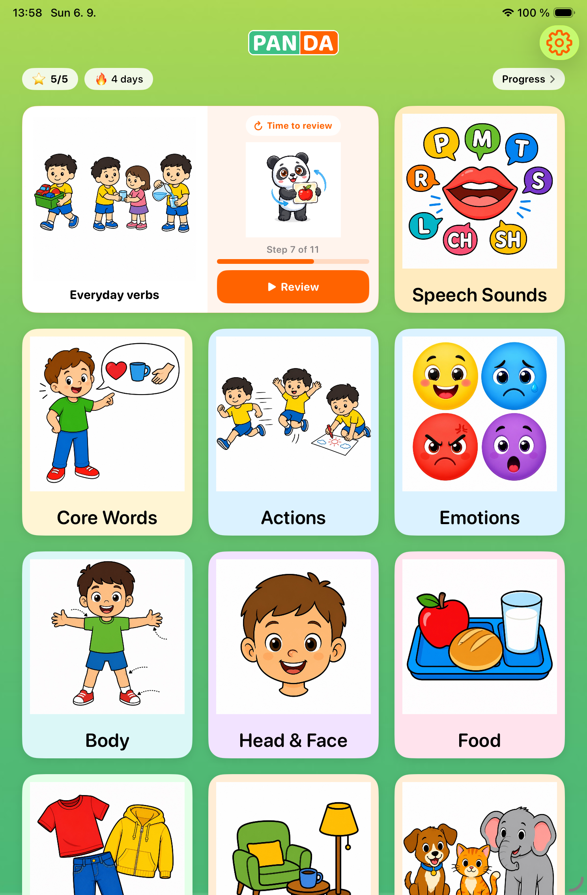
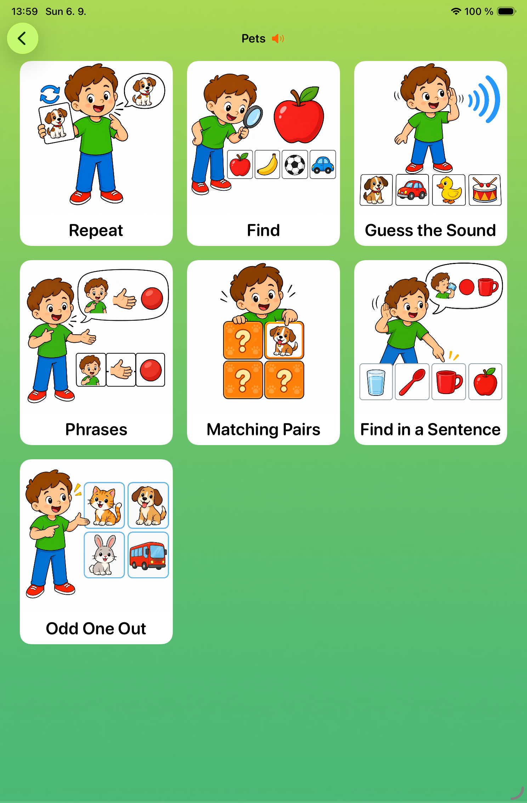

A calm, truly multilingual app for children aged 2–5. It builds understanding and guides them from first words to useful everyday phrases — with no ads, account, microphone or pronunciation scoring.
Download on App StoreFull card library + Repeat free · Premium adds 6 activities + Speech Sounds

Use PAN | DA at your child's own pace — for first words, extra speech support or more than one home language.
Explore useful everyday words through clear pictures, spoken audio and short playful activities.
A practical tool for home practice between professional sessions or while your family is waiting for support.
Practice the same picture cards in any of six languages and switch whenever your family needs.
Short, guided activities that fit into everyday family life.
PAN | DA suggests what to practise next based on your child's communication level and previous sessions.
Choose an activity and practise together. Repeat words, find the right picture, recognise real sounds or use familiar words in everyday phrases. The app speaks every word aloud.
PAN | DA keeps a practice log — how often, which categories, how well. Export a PDF and bring it to your next appointment as a starting point for the session.
Repeat is free. Premium adds six interactive activities for listening, understanding, everyday phrases, memory and categorisation.

Browse the full card library, hear each word and practise together at your child's pace.
Premium also includes a separate tool for practising a target sound at the beginning, middle or end of familiar words.
Use PAN | DA in portrait or landscape. Cards and audio also work offline — at home, on the go or together at a table.
No account. No ads. Your child's practice data stays on your devices and syncs through your private iCloud account. We use anonymous usage analytics to improve the app.
PAN | DA uses your practice history and your child's communication level to suggest what to practise next.
Add photos of family members and classmates. PAN | DA teaches your child the names of the people in their life.
Export a practice summary — frequency, categories, accuracy — and bring it to your therapist so they know exactly what you've been working on at home.
Set your child's current stage — from nonverbal to full sentences. The app adapts which cards and modes are shown.
When our son was still communicating very little at preschool and we finally met with a speech and language therapist, we were advised to make him a communication book with pictures and words to help build his vocabulary. We also tried several apps, but none worked as simply as we needed.
That is how PAN | DA began — as a simple app we could use for short practice anytime and anywhere. It gradually grew with our son: everyday phrases, sounds and different ways to practise were added to the first words. Because he is growing up with Czech and English, it was important from the start that he could practise the same vocabulary in both languages.
Our son has developmental dysphasia, and his experience has shaped the app. PAN | DA can also support other young children learning first words, expanding their vocabulary or growing up with more than one language.
— Hannah & Martin, Prague
We want every family to be able to try PAN | DA properly. That’s why the full card catalogue, Repeat mode, all languages and progress overview are free.
Premium adds six interactive activities, while focused Speech Sounds practice is included as a separate Premium tool. Your subscription also supports new cards, sounds, translations and continued development.